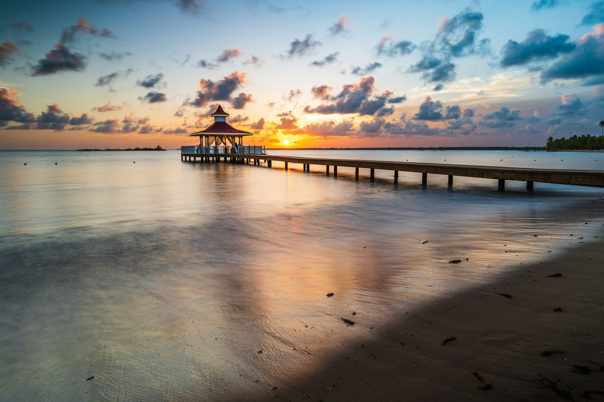
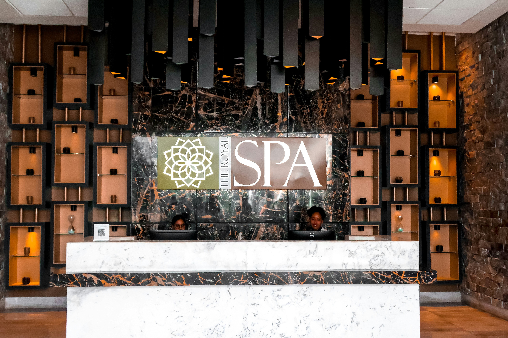

Find a Place to Stay
Punta Cana has many resorts and hotels to choose from. Whether you want to stay close to the beach or find a comfortable resort for your vacation, there are options for different budgets and preferences. The following resorts are worth exploring when planning your trip.
Keep in mind that hotel prices can change depending on the season, travel dates, and room type. Compare prices and amenities before making a reservation.
Bahia Principe Explore Punta Cana
Formerly Bahia Principe Grand Punta Cana

Bahia Principe Explore Punta Cana is an all-inclusive resort in the Arena Gorda area. It offers guests dining options, pools, entertainment, and activities for families. It may be worth considering for travelers who want several amenities available at their resort.
Visit the official Bahia Principe Explore Punta Cana website for more information.
Occidental Punta Cana

Occidental Punta Cana is an all-inclusive resort located along El Cortecito Beach in the Bávaro area. The resort offers beach access, swimming pools, restaurants, and activities for visitors looking for a vacation with dining and entertainment options in one location.
Visit the official Occidental Punta Cana website for more information.
Vista Sol Punta Cana Beach Resort & Spa

Vista Sol Punta Cana Beach Resort & Spa is an all-inclusive resort with direct access to Bávaro Beach. Guests can enjoy swimming pools, restaurants, a spa, and recreational activities. It is an option for travelers who want to stay close to the beach while having resort amenities available.
Visit the official Vista Sol Punta Cana website for more information.